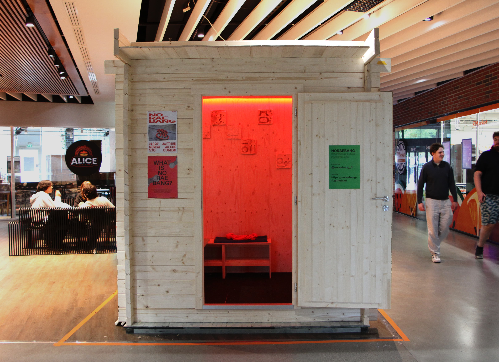
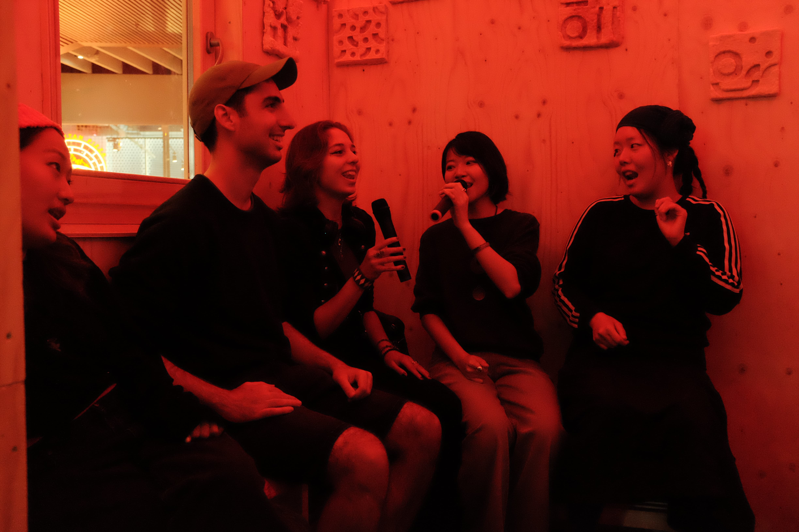
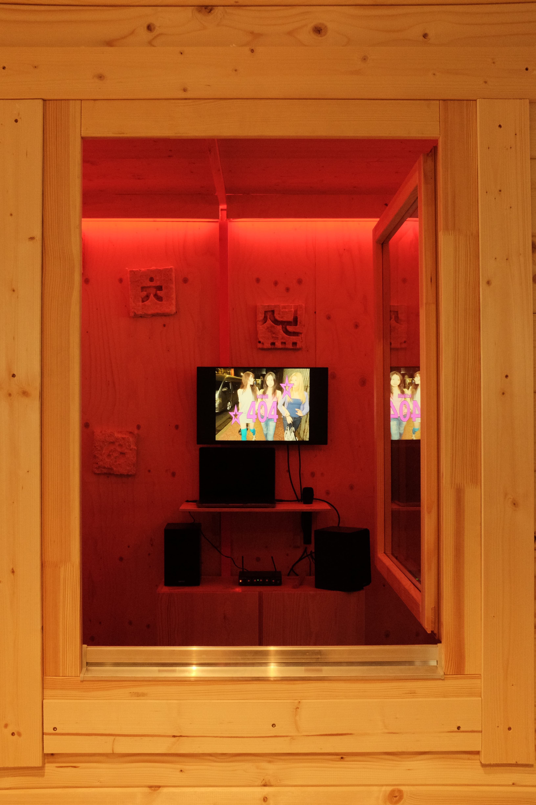
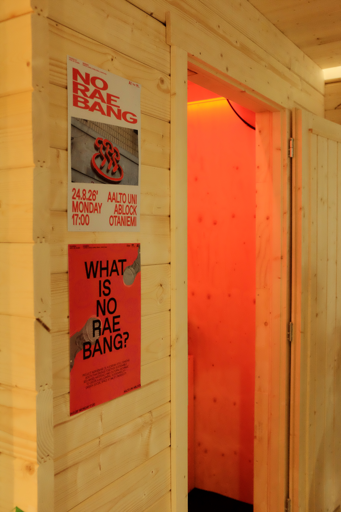
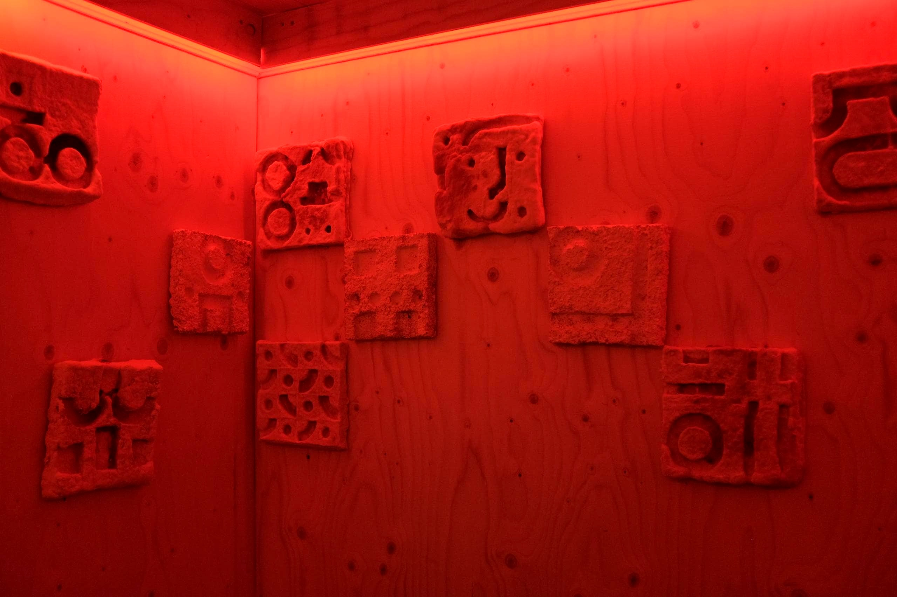

Noraebang placed in the building of Abloc, right above Aalto University metro station.
Noraebang is a Korean karaoke booth installed in Aalto University, Espoo, Finland. It is built using a converted Finnish sauna and soundproofed with bio-based materials like mycelium and wood fiber. The project is led by me and two other students: Yejin Youn and Shawn Shinwoo Kim. It is also in collaboration with other designers and researchers, including Harvey Shaw (mycelium researcher), Daein Kang (interior designer), Harim Kwon (interior designer), and Circular Foams (bio-based material startup).
The project is supported by Sustainability Action Booster (9000 EUR grant), Singa, and BioMakers Lab.
Noraebang is expected to open in full operation in late August. Community members will be access the karaoke booth with a small maintenance fee.
For more information, follow us on instagram at @noraebang_fi.

Community members singing inside the booth during the Noraebang opening event.

A view through the Noraebang window.

Entrance of the noraebang and opening event posters.

Mycelium panels are hung on the wall for soundproofing purposes.